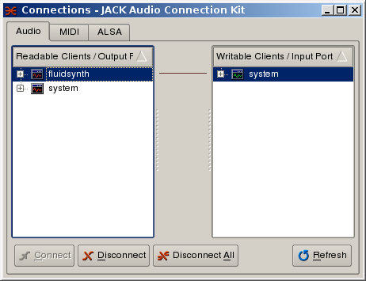

Tällä sivulla on yleistietoa musiikkiharrastuksista, tällä hetkellä lähinnä MIDI-musiikin laatimisesta Linux-käyttöjärjestelmässä.
Vääränlaisella tai väärin sovelletulla Linux-ytimellä ei voi tehdä musiikkia! Näin kategorisesti on asia ilmaistava aloittelevalle Linux-musiikintekijälle, jotta vältyttäisiin lukuisilta keskenään epäsopivien pakettien ja äänijärjestelmän katkosten provosoimilta perisuomalaisilta voimasanoilta. Jotta emme joutuisi menemään tässä Linux-järjestelmän kääntämiseen lähdekoodeista asti, suositeltakoon heti toimitettavaksi täysaikaisen Linux-ytimen asentaminen automaattisesti. Uusimmassa Ubuntu Linux:issa se tapahtuu seuraavasti:
$ sudo apt-get install linux-rt
Tämän seurauksena seuraavan kerran tietokonetta käynnistettäessä on tarjolla *-rt vaihtoehdolla oleva käynnistäminen. Kun tämä vaihtoehto valitaan, päästään järjestelmään, jossa joillakin käyttäjillä voi olla täysaikaisen suorittimenkäytön oikeus. Tällaisen oikeuden voi pääkäyttäjä myöntää audio-ryhmään kuuluville käyttäjille seuraavasti:
$ cd /etc/security $ sudo vim limits.conf
ja editoimalla mainittu tiedosto sisältämään seuraavat rivit:
@audio - rtprio 99 @audio - memlock unlimited @audio - nice -19
Nyt on kyseisen käyttäjän kirjauduttava kerran ulos ja kerran sisään.
Linuxin toiseksi suosituin ja itse käyttämäni ohjelmallinen syntetisaattori (Timidity:n jälkeen) on Fluidsynth. Tämä asennetaan Ubuntu Linux-järjestelmässä seuraavasti:
$ sudo apt-get install fluidsynth fluid-soundfont-gm fluid-soundfont-gsTällä varmistetaan myös sopivien ääniesimerkkitiedostojen (engl. sounfonts) asentuminen oikein.
Tämä on myös välttämätön. Se asennetaan esimerkiksi komennolla:
$ sudo apt-get install qjackctl
$ sudo apt-get install rosegarden
Ensimmäisenä tulee konfiguroida ja käynnistää JACK.
Tämä tapahtuu helpoiten etsimällä käynnistysvalikon
multimediaosasta "Jack Control"-ikoni ja käynnistämällä
qjackctl siitä. Alla olevista kuvista näkyy muutama
esimerkki-ikkuna. Merkillepantavaa on ruksi kohdassa "Realtime" ja se, että
sovelman ollessa käynnissä (Start) teksti "RT" vilkkuu. Huomaa,
että täysaikaisuuden valitsematta jättäminen tai
vääränlaisen, tätä mahdollistamattoman ytimen
käyttö johtaa äänitysten ja soiton epäonnistumisiin
äänikatkojen vuoksi!
Seuraavaksi avataan konsoli-ikkuna ja käynnistetään Fluidsynth siitä:
$ fluidsynth -a jack -r 44100 /usr/share/sounds/sf2/FluidR3_GM.sf2Tässä kohden on oltava huolellinen, että
-r-optiolla
valittu taajuus vastaa täsmälleen JACK:in taajuutta.
Väärä taajuus voi johtaa MIDI-sekvenssereissä tai niiden apuna
olevissa äänitysohjelmissa musiikin soimiseen väärältä
korkeudelta tai MIDI-raitojen ja audioraitojen keskinäiseen
epätahtiin (mikä kuulostaa todella rumalta). Tämän jälkeen
kytketään Fluidsynth systeemin ulostuloon seuraavasti:

Lopuksi käynnistetään rosegarden multimedia-valikosta.
Sen käynnistämisen jälkeen pitäisi JACK:in yhdistelyvälilehden
näyttää seuraavanlaiselta:
eli Rosegarden:in kytkennät on automaattisesti huomioitu.